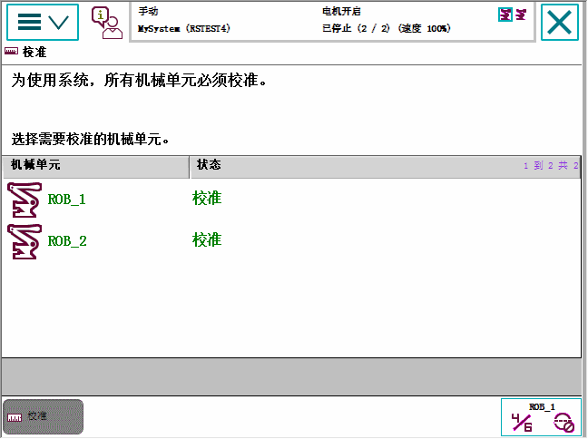
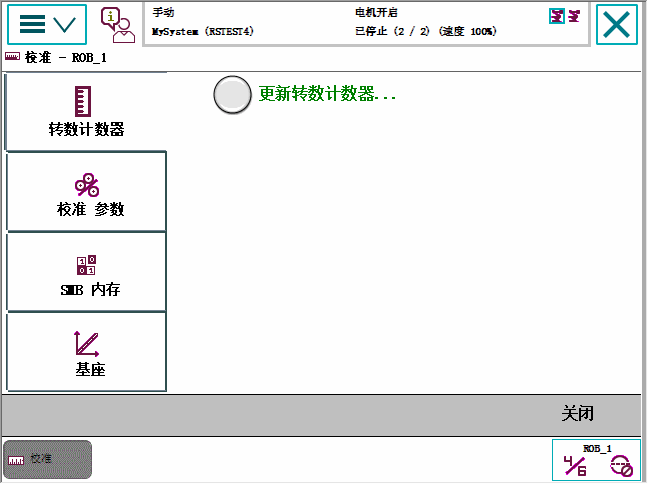

| 浏览和处理 FlexPendant - Main menu | ||
| Calibration（校准） | ||
| 选项：水平仪校准 | Calibration（校准）菜单用于校准机器人系统中的机械装置。可使用 Calibration Pendulum 选项执行校准。请参阅操作员手册 - Calibration Pendulum。 |
| Calibration（校准）菜单图示 | 下图展示了 Calibration（校准）菜单。菜单中列出了所有机械装置，Status（状态）栏显示的是它们的校准状态。  |
| Calibration（校准）菜单选项 | 下图展示了选择机械装置之后的Calibration（校准）菜单选项。  |